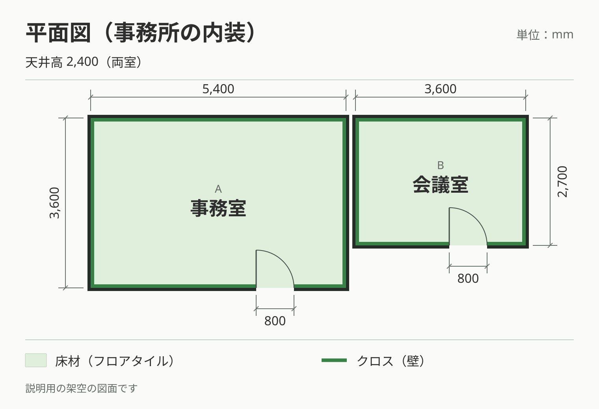
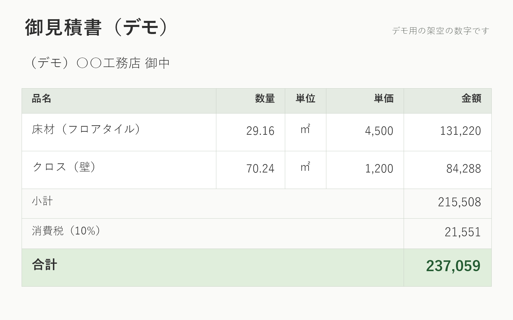

図面の拾い出しを
AI に任せる前に、
確かめておくことが
3つあります
この記事は、2回の試験の記録をもとにしています
TechWedge のメンバーが父親と営む、内装系金物の施工会社で行った試験です。階段の段や壁際の長さを、図面から AI に拾わせました。
| 1回目 | 2回目 | |
|---|---|---|
| 図面 | 実際の案件の平面図。寸法の書いていない壁もあり、壁紙や設備の記号も載っている | 練習用の架空の図面。すべての段に寸法が書いてある |
| 拾わせた物 | 壁際の長さ | 階段の段の長さ |
| 使った AI | Claude Sonnet | OpenAI の Codex |
| 結果 | 建物の奥行きを超える部屋を数える／壁紙の記号を壁として数える／通路の長い壁が抜ける。合計は不採用 | 階段A 1,200mm×12本＝14.4m、階段B 900mm×10本＝9.0m、合計23.4m。正しい値 |
1回目の数字は、社内の確認の段階で不採用にしました。見積には使っていません。
次の図は、床材とクロスで、図面の拾い出しから見積の下書きまでを示した例です。図と数字は説明用の架空の物で、上の2回の試験とは別に作りました。


ドアは幅800mm・高さ2,000mmで、2か所分の面積を差し引いています。
2回の試験では、図面の条件も使った AI も違いました
1回目の図面には、寸法の書いていない壁があり、数値を写すだけでは長さを決められませんでした。2回目の図面には、どの段にも寸法の数値がありました。
使った AI も、1回目と2回目で別のものです。条件が2つ同時に違うので、結果の差をどちらか一方に結び付けることはできません。
確かめる対象は3つです
AI が出した拾い出しの結果を見積に使う前に、次の3つを確かめます。
建物の外形
全体の長さと奥行きを、図面から先に押さえます。拾った部屋や壁は、すべてこの外形の中に収まるはずです。
拾った箇所の一覧
AI が拾った壁や段を、1行ずつの一覧にします。一覧の行数と、図面上の壁や段の数が合っているかを見ます。
寸法の書いていない箇所
図面に数値が書いていない壁や段を、一覧の中で区別しておきます。ここは AI が推し量った値になりやすい所です。
照合は、外形→番号→合計の順に行います
- 外形との照合：一覧の部屋の奥行きや幅が、建物の外形を超えていないかを見ます。超えていれば、その部屋のどこかに数え違いがあります。
- 番号での照合：図面の壁や段に番号を振り、一覧の番号と1つずつ突き合わせます。図面にあって一覧に無い番号が、数え落としです。
- 合計の照合：最後に合計を出します。合計だけを先に見ると、数え落としと数えすぎが打ち消し合って、気づけないことがあります。
次の3つに当たったら、判断を保留します
- 寸法の書いていない壁や段があるとき — その部分は「概算」とし、見積に使う前に実測などで確かめます
- 線が壁なのか記号なのか、図面だけでは決められないとき — 「未確認」とし、図面の凡例か現地で確かめます
- 外形からはみ出す部屋があるとき — その部屋の拾い直しが終わるまで、合計を見積に使いません
保留した箇所が残っている結果は、見積の数量としては使わないことをおすすめします。
図面の読み取りには、性能の高いモデルを選ぶことにしました
読み取りに使うモデルは、Claude Opus などの性能の高いものに切り替える方針です。モデルを替えても、03〜05 の確認は同じように行います。
拾い出しは、照合とセットで AI に任せられます
寸法の書いてある図面なら、AI は正しい長さを返しました。その長さを元の図面と照らしてから、見積の下書きに使います。寸法の無い箇所や記号の多い図面は、03〜05 の確認で読み違いを拾ってから使います。
このページの3つの確認は、1回目の読み違いを受けて決めたものです。
関連記事: 自動化した仕組みが止まっていても、3時間誰も気づきませんでした ／ AIが向いている業務・向いていない業務の見分け方 ／ コラム一覧へ
中芝 悠太
内装金物の職人として現場に立ちながら、昼は現場・夜はAI。自社の領収書の仕分けの時間を約9割短縮した実体験から、このチームを立ち上げた。現場の話が通じる窓口担当。